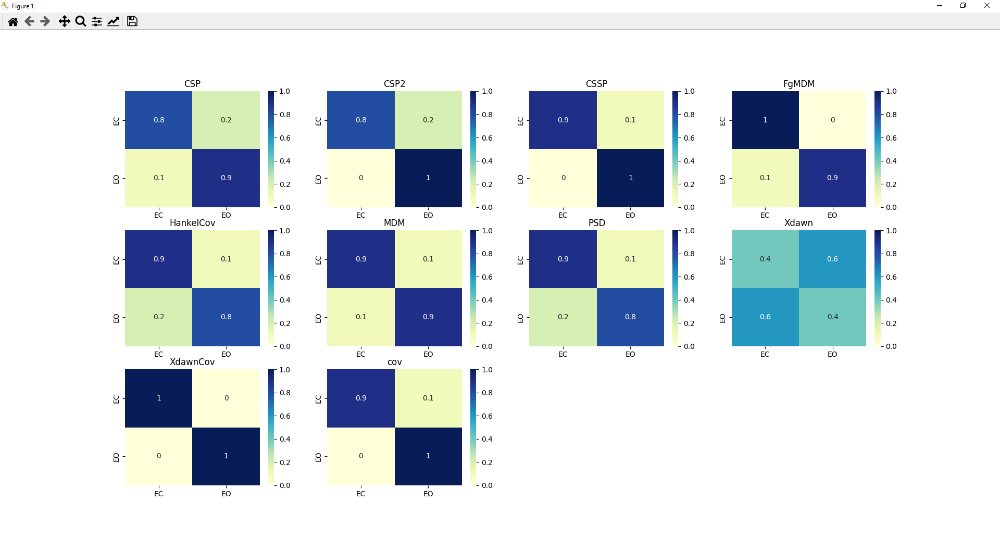

MNE Vision Tutorial¶
Welcome to MNE Vision !
MNE Vision is a free and open-source software for processing and analysing EEG signals, based on the MNE python library.
In this tutorial, we will show how to use MNE Vision in order to import data and do some processing.
Importing data¶
In MNE Vision, data can be imported from 3 file formats:
- FIF: Those are file formats used by MNE.
- ANT EEGO CNT: The CNT files provided when recording data with ANT EEGO headset.
- SET: The file format used by EEGLAB.
Once the dataset is selected, you can modify multiple parameters. By default, all the parameters used are the ones found inside the dataset.
Seeing the imported data¶
Once the dataset is loaded, we can see all the information loaded by MNE Vision on the main window.
All the information found inside the dataset will be showed there. MNE Vision will automatically detect if the dataset is a raw recording or if it is already epoched. It will also look for the events present in the dataset.
From there, you can perform multiple computations on the dataset. You can check the dataset and edit various information such as the events or the channel positions.
If you go in the “plots” menu, you can click on the “channel data” to see the EEG data displayed in a new window.
Tools & Plots¶
There are various tools that can be applied on the dataset. There is the filtering, resampling, re-referencing and many more.
They are all available in the “Tools” menu. Selecting one of the tools will open a new window asking for supplementary data before applying the chosen computation.
ERP¶
The simplest analysis that you could do, is the ERPs computed with the average of the epochs. You can compute the ERPs for all the channels, as well as computing the ERP images for one channel with topographies associated to the ERP image.
PSD¶
Another plot that we can compute is the Power Spectral Density.
Advanced computations¶
There are some advanced tools and plots in MNE Vision, such as the source estimation, the connectivity or the classification with machine learning.
All those tools are pretty easy to use thanks to the graphical interface of the software. Just as for the other tools, MNE Vision will ask you some parameters before starting the computation and will output the results at the end. Those computations are more complex and will thus take more time than the simpler ones.
Source Estimation¶
A complex computation is the source estimation that will estimate the origin of the signals.
MNE Vision plots a 3D representation of the brain where the user can change the time at which the activity is shown. You can also choose some parameters before the computations such as on which epochs the estimation is done, the method, and more.
EEGLAB outputs multiple figures showing the different slices of the brain and the activity plotted on them, as the figure ref{fig:comparison_eloreta_eeglab} shows. However, we have no control over the time or the epochs used for the computation. EEGLAB also only allows the computation to be done with the “eLORETA” method.
Classification with machine learning¶
MNE Vision uses a variety of pipelines for performing the classification and will classify the epochs in function of their events. It outputs two figures, the confusion matrix containing the results of each pipeline. And also the ROC curves and AUC scores of each pipeline. This classification shows to the user if it is possible to distinguish the different events based on the brain activity.
More¶
MNE Vision can perform various computations, do not hesitate to try them !